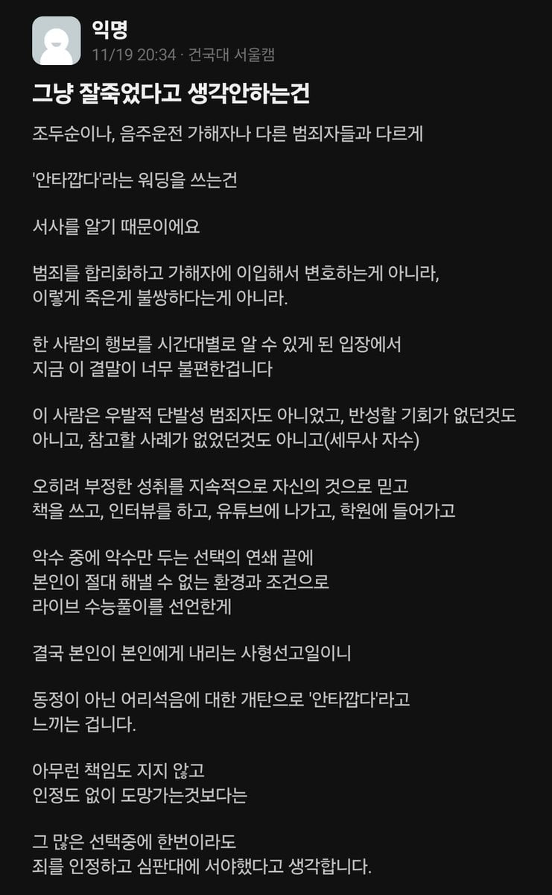

나도 똑같은 생각
그리고 수능 런친거부터 도주루트까지 생중계로 보니까 더 찜찜했음

나도 똑같은 생각
그리고 수능 런친거부터 도주루트까지 생중계로 보니까 더 찜찜했음
댓글 씹창난거에 비해선 추천수가 꽤 많네
커뮤에서 눈팅하며 추천정도만 하는 일반적인 유저들과 덧글에 무조건 한마디 얻으며 키배판 만드는 사람과의 괴리가 느껴지는 글 추천/비추수...
ㅇㅇ 진짜ㅋㅋ 확실히 댓글이 분위기 몰아가는게 있긴한가봄
자살 미수에서 경찰에 발견이 더 좋았을거 같아 죽음이 더 나은 결말일거라 생각이 안들어
실시간으로 사람을 사형시키는걸 본거랑 마찬가지임. 그래서 찜찜한거고, 찜찜해야만 인간임. 잘 뒤진건 맞음ㅋㅋ
"어리석음에 대한 개탄" 이걸로 내 감정이 설명이 되네ㄷㄷ
이걸 이해못하는애들은 ㄹㅇ7등급이냐
병신새끼 잘 죽었다 하나도 안 불쌍하다 : 정상
그래도 자수하고 죄값 치르면서 살았으면 좋겠는데 안타깝다 : 정상
범죄자 새끼 죽었는데 뭐가 불쌍하냐 안타까워 하지마라라고 남의 감정까지 뭐라하는 새끼=개병신 새끼들
범죄 옹호하는 것도 아니고 왜 그런 행동을 했는지 이해 못 할 정도로 흉악범도 아닌데 왜 안타까워하는 다른 사람 감정까지 통제하려는 건지ㅋㅋ
댓글 슥 봤을 땐 "안타깝다" 단어 하나에만 꽂혀가지고
지 맘에 안들고 의견 동조안하니까 남의 의견도 통제하려는거 같음
푸바오때 댓글창 보는 느낌남 ㅋㅋ
난 이새끼 범죄이력을 보고
그렇게 안타까워 할 사람이 아니라고 느꼈다
평소 행실이 무뢰배에 가깝고 양심이라고는 없으며 피해자에게까지 생각이 미치지 않는 사람이다
자존심은 강하고
남을 속여먹는게 본인이 똑똑하고 다른사람은 멍청해서 그렇다고 굳게 믿는 부류의 사람이지
역지사지로서 나도 그에게 일말의 온정도 배풀 생각이 없다
여기서 저 '사람'이 죽은거 안타까워하는 사람은 거의 없을걸? (죗값을 안 받아서 안타깝다 말고)
그냥 저 삶의 흐름이 안타까운거임.
'어떤 희열 한 조각을 느끼는 바람에 거기 매몰되서 그 희열을 위해 거짓말로 본인 인생을 망가트리다가 스스로 망가져서 수렁에 빠지고 그걸 수습 못해서 결국 스스로 삶을 끝냈다'는 이 흐름 자체는 낮설지가 않거든
개인/사람이 죽은건 범죄자라 별로 안타깝진 않아....
글 잘 쓰네. 우리가 또한 서사만 알고 이진우의 개인성은 파편으로 알아서, 윗 글처럼 서사에 대한 평가를 안타깝다로 할 수 있지않나 싶음. 성격을 어림짐작해보는 사람들은 죽어도싸다라는 평을 하는 것 같고, 서사만 보면 안타까운 소설같긴함.
안타깝다 하는놈들 막상 직접적인 피해자가 됐을때도 같은말 할 수 있는지가 궁금함
죄의 대가는 오직 죽음뿐!!!
라는 내용의 K-드라마나 영화 한편 뚝딱 나올 것 같음. 그것도 AI가 제작한 걸로.
댓글이 더 혼란하네.
파멸로 기어들어가는 모습이 안타까운거지
살았으면 들어가는 행정력 세금 세이브되서 좋긴함
나는 다른것보다 18수능 수험표 찢은게 큰듯
회색지대를 견디지 못하는 건지, 키워드에 반사적으로 반응한 건지, 도덕성을 과시하고 싶은 건지... 이해하기 어려운 댓글 참 많네
헤겔의 밤베르크(1807년) 시절 에세이 중에 "누가 추상적으로 사유하는가?(Wer denkt Abstrakt?)"라는 논문이 있음. 보통 일반적인 대중들은 철학자를 향해 "추상적으로 사유한다"며 비난하지만, 실제로 행위하는 양태를 보면 대중들만큼 추상적으로 사유하는 동물이 없다는 것을 단순한 살인자와 사형의 사례를 놓고 논변하거든. 예컨대 살인자를 향해 "그 놈은 살인자기 때문에 죽을만한 놈이다"라고 외치는 대중들은, 바로 그 살인자라는 추상적인 관념 하에 대상을 납작하게 압축시켜버리고 아무것도 보려하지 않음. 가장 추상적으로 생각하는 동물의 전형적인 모습인거지. 또 논문의 비슷한 사례로, 프로이센 군대에서 하급자를 구타하는 상급자의 사례도 나옴. 이때 구타하는 자의 머릿속에서 진행되는 생각은, 상대를 총체적으로 살아있는 인간으로 보지 않고, 단지 지위와 위치와 군도의 소지 여부따위로 갈라지는 추상적인 "하급자"라는 관념 하에 살아있는 인간을 우겨넣어 놓고 "...그러므로 나는 이 자를 두드려 패도 된다"고 추상적으로 생각하는 것에 불과함.
저걸 리트냥이에 대한 쉴드로 생각하는건 사고방식이 너무 단편적이고 지능이 모자른거임
사죄하고 반성하고 옳은 길로 갈 수 있는 기회가 얼마든지 있지만
애초에 그럴 사람이 아니라서ㅋㅋ
과거에 지은 죄로 죽을 정도다까지는 글쎄인데
앞으로 낳을 수 많은 피해자들 생각하면 미리 싹을 잘 자른 듯...
차라리 인정하고 반성한다는 유서였으면 안타까웠을텐데
끝까지 언급없이 런쳐서...
글잘쓴다